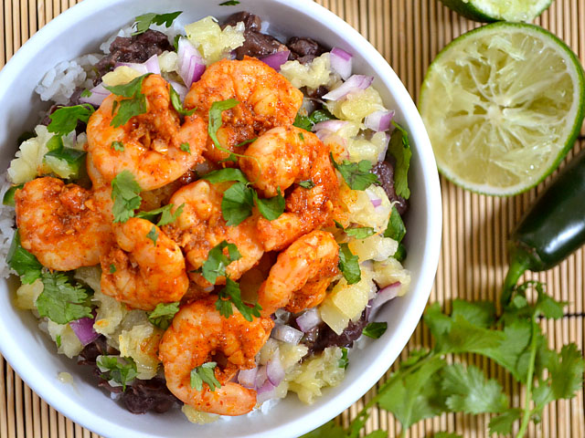

Chili Lime Shrimp Bowl Recipe

Description
Betcha didn't think you could eat shrimp on a budget, did you? Well, if you use the basic Budget Byting principle of combining an expensive ingredient (like shrimp) with less expensive ingredients (like rice and beans), it suddenly becomes more affordable.
Taste the tropics with these easy chili lime shrimp bowls. Rice, black beans, pineapple salsa, and spicy shrimp make a delicious and filling meal in a bowl.
Ingredients
- 1 lb. peeled shrimp
- 1 tsp chili powder
- 4 tsp cooking oil, divided
- 1 tsp honey
- 5 cloves of garic
- 2 limes
- 2 15oz. cans of black beans
- 1/2 tsp ground cumin
- 2 jalapenos
- 1 20oz. can crushed pineapple
- 1/2 red onion
- 1 tsp salt
- 1 bunch fresh cilanto
- 2 cups white rice
- any type of white rice is fine
Instructions
- Begin by marinating the shrimp. Prepare the marinade by combining the chili powder, honey, and soy sauce with the juice of one lime, one clove of minced garlic, and one teaspoon of vegetable oil. Rinse the shrimp and shake off excess water. Add the marinade, stir to coat, and refrigerate until ready to cook.
- Begin to cook the rice. Combine 2 cups of dry rice with four cups of water. Cover and bring to a boil over high heat. As soon as it reaches a full boil, turn the heat down to the lowest setting and let simmer for 20 minutes. After 20 minutes, turn the heat off and leave it covered until ready to serve.
- Prepare the seasoned black beans. Add 1 tablespoon of vegetable oil to a medium pot and add two cloves of minced garlic and one seeded and minced jalapeno. Saute for about one minute and then add the cumin. Saute for one minute more and then add the black beans. Stir and heat through.
- Prepare the pineapple salsa. Drain the can of crushed pineapple well. Cut the red onion into a small dice. Remove the seeds from the jalapeno and cut it into a small dice. Roughly chop 1/4 bunch of cilantro. Combine the pineapple, jalapeno, red onion, cilantro, the juice of one lime, and 1 tsp of salt in a bowl. Stir until combined. Taste and adjust the salt and cilantro as desired.
- To cook the shrimp heat a large skillet over a medium flame. Add the shrimp and all of the marinade. Cook just until the shrimp is opaque and has curled up. Remove the shrimp from the skillet and continue to let the marinade simmer until it has reduced and thickened (about five minutes more). Pour the thickened marinade back over the shrimp and stir to coat.
- Build the shrimp bowls. Place one cup of rice in the bottom of a bowl. Top with about 3/4 cup seasoned black beans and about 1/2 cup of pineapple salsa. Place 7 or 8 shrimp on top. Garnish with extra cilantro if desired.